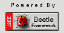

Beetle Web MVC Framework Demo
| 基本控制器 | |
| ø 简单登陆过程演示 （标准视图控制器） | |
| ø 零配置应用演示（简单登陆过程功能的零配置实现） | |
| ø 文件上传演示 （文件上传控制器） | |
| ø 服务器文件下载 （非标准视图控制器） | |
| ø 页面动态画图演示 （绘图控制器） | |
| ø 虚拟控制器演示（无须子控制器的实现类，直接返回页面视图） | |
| ø Ajax调用演示 | |
| ø 页面动态生成PDF和Excel文件演示 （文档控制器） | |
| ø 多动作控制器演示 | |
| 扩展功能 | |
| ø Freemarker模板视图示例 （改写简单登录JSP视图） | |
| ø 数据绑定与校验 （页面参数自动填充与javascript校验框架演示） | |
| ø 页面请求动态（控制器）缓存演示，没有使用缓存，使用缓存(缓存30秒) | |
| ø 验证码示例 | |
| ø 防止表单重复提交 | |
| ø 特定请求并发控制 | |
| ø 控制器全局启动／结束接口支持(参看WebAppOnOff.java源代码) | |
| ø Web Service演示: demo | |
| AOP横切编程 | |
| ø 标准视图控制器横切编程 | |
| 框架内置统计报表 | |
| ø 内置控制器、视图及两者调用关系报表 | |
